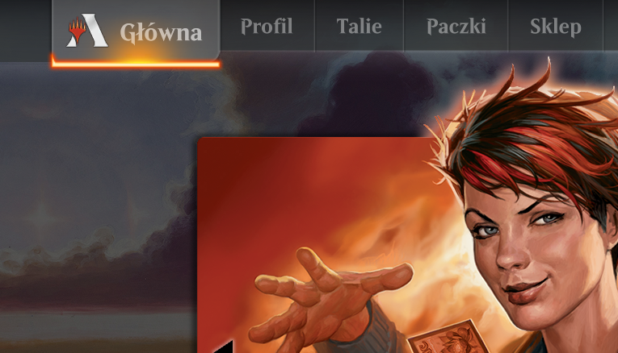

Nieoficjalne tłumaczenie gry Magic: The Gathering¶
Ninieszy serwis ma na celu pomoc osobom, które chcą zacząć grać w Magic: the Gathering, ale nie znają angielskiego na tyle dobrze, by samodzielnie tłumaczyć karty i zasady gry.
Po najechaniu myszką na nazwę karty można zobaczyć jej oryginalny wizerunek.
Jeśli uważasz, że projekt ten jest przydatny, wesprzyj autora na Patronite.
Lista osób, które wsparły projekt - pięknie dziękuję!
Spolszczenie Magic Arena¶
Chcesz grać w Arenę po polsku? Kiedyś dało się to zrobić (nie działa, zostawione jako treść archiwalna). Niestety producent gry wraz z kolejnymi aktualizacjami dość skutecznie wyłączył tę możliwość. Jeśli uważasz, że amatorskie tłumaczenie gry jest przydatnym projektem, możesz zagłosować na prośbę o oficjalne umożliwienie dodawania własnych tłumaczeń.
Instrukcja gry¶
Tłumaczenie dodatków¶
Nadchodzące¶
Dominaria Remastered Premiera: 2023-01-13
Jumpstart 2022 Premiera: 2022-12-02
Brother’s War Commander Premiera: 2022-11-18
Brother’s War Premiera: 2022-11-18
Brother’s War Retro Artifacts Premiera: 2022-11-18
Standard¶
Format posiadający rotację - raz do roku część dodatków przestaje być legalna w tym formacie, by zrobić miejsce na kolejne. Dzięki temu pula kart ma przewidywalny rozmiar. Jest podzbiorem wszystkich innych formatów.
Pionier¶
Nowy format bez rotacji. Należą do niego wszystkie dodatki wydane wcześniej w Standardzie od Return to Ravnica do teraz. Jest podzbiorem formatu Modern. Na poniższej liście znajdują się dodatki poza Standardem.
Modern¶
Starszy format pozbawiony rotacji. Należą do niego wszystkie dodatki wydane wcześniej w Standardzie od Mirrodin do teraz. Na poniższej liście znajdują się dodatki nie wymienione wcześniej.
Oprócz tego format otrzymał specjalne dodatki, które nigdy nie był częścią Standardu:
Legacy / Vintage¶
Formaty Legacy i Vintage zawierają wszystkie karty wydane od początku istnienia gry. Na poniższej liście znajdują się te dodatki, które nie znalazły się na wcześniejszych listach.
Pozostałe produkty¶
Dodatki wyłącznie cyfrowe¶
Na komputery wyszło kilka gier pozwalających grać w MTG, ale najpopularniejszymi są zdecydowanie MTG Online oraz MTG Arena. Otrzymały one specjalne dodatki, które nie miały swoich bezpośrednich papierowych odpowiedników, ale zawierały karty z innych dodatków dobrane w taki sposób, by zapewnić odpowiedni balans zarówno w Constructed jak i Limited.
Alchemy Horizons: Baldur’s Gate (tylko Arena)
Arena Beginner Set (tylko Arena)
Amonkhet Remastered (tylko Arena)
Kaladesh Remastered (tylko Arena)
Tempest Remastered (tylko MTGO)
Jumpstart¶
Jumpstart jest ciekawym sposobem na szybką grę w MTG. Dodatek zwiera niemal 500 przedruków z innych dodatków. Oprócz tego zawiera 37 nowych kart legalnych tylko w formatach Eternal (Legacy, Vintage, Commander). Karty z symbolem są legalne w Standardzie 2021.
Jumpstart: Historic Horizons tylko cyfrowo
Zestawy gildyjne¶
Seria «Masters»¶
Commander i podobne¶
Zasady¶
Conspiracy¶
Produkty pokrewne¶
Poniższe produkty nie zawierają zwykłych kart do Magica, ale umożliwiają specjalne rodzaje rozgrywek.
Warto przeczytać¶
Glosariusz¶
Ostatnie zmiany¶
Proszę zajrzeć do pliku Ostatnie zmiany
Sponsorzy¶
Centrum hobbystyczne „Strefa” z Bielska-Białej.
Ekipa¶
Niniejsze tłumaczenie powstało dzięki pracy następujących osób:
Dominik Kozaczko - pomysłodawca, główny tłumacz
Bartek Pękala - tłumacz
Krzysztof Buniewicz - tłumacz
Zofia Wąchocka - tłumacz, filolog
Roman Cupek - nadzorca merytoryczny
Kwestie prawne¶
Niniejszy serwis działa zgodnie z zasadami zawartymi w dokumencie Wizards of the Coast’s Fan Content Policy.
Część materiałów w tym serwisie jest własnością Wizards of the Coast. ©Wizards of the Coast LLC.
Zawartość niniejszego serwisu NIE JEST zatwierdzona lub sponsorowana przez Wizards of the Coast LLC.
Tłumaczenia zawarte w tym serwisie (CC) copyleft Dominik Kozaczko. Some rights reversed.
Licencja tłumaczeń: CC BY-NC-SA 4.0
Legal notice¶
MTGpoPolsku.pl is unofficial Fan Content permitted under the Fan Content Policy. Not approved/endorsed by Wizards. Portions of the materials used are property of Wizards of the Coast. ©Wizards of the Coast LLC.
Translation work (CC) copyleft Dominik Kozaczko. Some rights reversed.